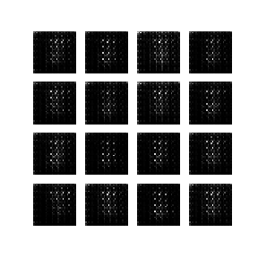

DCGAN
Here we will talk about Generative Networks and implement a simple version of DC GAN.
Introduction
GAN? -> Generative Adversarial Network. This came about as an attempt to have a neural network create something new from images instead of just using them to perform supervised tasks.
Why? -> Many reasons. Art being one of them. The second being the ability to have an almost infinte supply of data. Finally, this is one step closer to having an AI system that can build things beyond what it was taught. Beyond infact, what we can do as humans too.
The challenge? -> When you have too many examples of different things, it is very easy to "forget" what you wanted. Or end up with a mash up of things. This is called mode collapse and many attempts to do it have been made.
Examples
Before I go on to our simple GAN (on MNIST). Here are some results I got with the same GAN for different purposes.
- The first was an attempt at creating Art. This was trained on a lot of art by various old artists. (zoom in a bit)

- This is trying to generate art from one of my closest friend's work. Do check him out here

-
This is trying to generate faces.
-

-
This is what we want to generate today (I know.. what even right?). Okay so I did cheat a bit, this animation was generated in Python a long time back when I first did DCGans there. But I get a bit of a waiver for this cool animation right??

Code
So let us get to making it? Hey! You did not explain how it works. Well I am a boring person by nature. xD. I will explain by code. But I want theory!!! Go check out the Paper.
Imports
Let us first import whatever we need. We have covered all of these before so I will skip the explanations.
using Base.Iterators: partition
using Flux
using Flux.Optimise: update!
using Flux: logitbinarycrossentropy
using Images
using MLDatasets
using Statistics
using Printf
using Random
using ImageView
So our aim is to take a random noise the size we need and generate a sensible image out of it. Everything that is possible in that is called it's latent space.
Constants
We also need to define some constants. Batch size, the dimension of the space we are trying to recreate, Sizes we want. And different (or same) learning rates for the two parts of our network.
batch_size = 128
latent_dim = 300
verbose_freq = 1000
output_x = 6
output_y = 6
lr_dscr = 0.0002
lr_gen = 0.0002
Now we need a way to plot our function from
So our network is made up of two parts. The first is a vanilla classifier with a bit of drama added on. It tells us how good our created image is. We call this the "Discriminator" because.. because well that's what it does.
Discriminator
If you notice, this is just a simple classifier. Nothing new here. Maybe except leaky relu. Why not relu? Because trial and error proved otherwise.(And a blog I linked towards the end of this article)
function Discriminator()
return Chain(
Conv((4, 4), 1 => 64; stride = 2, pad = 1),
x->leakyrelu.(x, 0.2f0),
Dropout(0.25),
Conv((4, 4), 64 => 128; stride = 2, pad = 1),
x->leakyrelu.(x, 0.2f0),
Dropout(0.25),
x->reshape(x, 7 * 7 * 128, :),
Dense(7 * 7 * 128, 1))
end
Generator
Now for the main part. The main dude here. This would be a little weird to look at. So let us look at it first.
function Generator()
return Chain(
Dense(latent_dim, 7 * 7 * 256),
BatchNorm(7 * 7 * 256, relu),
x->reshape(x, 7, 7, 256, :),
ConvTranspose((5, 5), 256 => 128; stride = 1, pad = 2),
BatchNorm(128, relu),
ConvTranspose((4, 4), 128 => 64; stride = 2, pad = 1),
BatchNorm(64, relu),
ConvTranspose((4, 4), 64 => 1, tanh; stride = 2, pad = 1),
)
end
Conv Transpose
Huhhhh. Whaaat????
Okay so first. What is conv transpose? I didn't know it myself so I looked it up. Great blog on it
Simply put, we take a smol image and try to reconstruct it to a bigger one. Why? Consider it to be an "up" convolution instead of a "down" convolution where the size reduces after the operation.
Okay but how? Consider our task of taking a matrix and a kernel. We pass the image through im2col to get our things together. After that we can do a matrix multiply if needed.
data = [1 2 3; 6 5 3; 1 4 1]
col_data = im2col(tmp_cm, (3, 3))
kernel = [1 2 0 2 1 0 0 0 0; 0 1 2 0 2 1 0 0 0; 0 0 0 1 2 0 2 1 0; 0 0 0 0 1 2 0 2 1]
new_data = col2im(kernel*col_data, (2,2))
Now what if we take the output of this and want to get the original back? To do that we basically pad the image. And then take the transpose of the kernel. And boom. This is something like a de - convolution. Except that is a misnomer.
Now armed with that knowlege, I would advice you to go back and look at our Generator function again.
Oh and before I forget. Notice the last Conv transpose's activation function? Yes. It's tanh. :) It seems to do better than relu for this layer due to some weight changes.
Loss functions.
Discriminator -> We have a loss function which takes the loss for real and fake images and sums them up.
function discriminator_loss(real_output, fake_output)
real_loss = mean(logitbinarycrossentropy.(real_output, 1f0))
fake_loss = mean(logitbinarycrossentropy.(fake_output, 0f0))
return real_loss + fake_loss
end
Generator -> Simple loss function as above
generator_loss(fake_output) = mean(logitbinarycrossentropy.(fake_output, 1f0))
Now how about training?
Training
Discriminator -> We first generate random noise. That will be our fake input. Then we can do a forward and backward pass on it.
function train_discriminator!(gen, dscr, x, opt_dscr)
noise = randn!(similar(x, (latent_dim, batch_size)))
fake_input = gen(noise)
ps = Flux.params(dscr)
# Taking gradient
loss, back = Flux.pullback(ps) do
discriminator_loss(dscr(x), dscr(fake_input))
end
grad = back(1f0)
update!(opt_dscr, ps, grad)
return loss
end
Generator -> For this we do almost the same exluding the loss function.
function train_generator!(gen, dscr, x, opt_gen)
noise = randn!(similar(x, (latent_dim, batch_size)))
ps = Flux.params(gen)
# Taking gradient
loss, back = Flux.pullback(ps) do
generator_loss(dscr(gen(noise)))
end
grad = back(1f0)
update!(opt_gen, ps, grad)
return loss
end
Data
Then we can load the data.
images, _ = MLDatasets.MNIST.traindata(Float32)
# Normalize to [-1, 1]
image_tensor = reshape(@.(2f0 * images - 1f0), 28, 28, 1, :)
# Partition into batches
data = [image_tensor[:, :, :, r] |> gpu for r in partition(1:60000, batch_size)]
fixed_noise = [randn(latent_dim, 1) |> gpu for _=1:output_x*output_y]
Loop
Let us train our network.
for ep in 1:epochs
global train_steps
@info "Epoch $ep"
for x in data
# Update discriminator and generator
loss_dscr = train_discriminator!(gen, dscr, x, opt_dscr)
loss_gen = train_generator!(gen, dscr, x, opt_gen)
if train_steps % verbose_freq == 0
@info("Train step $(train_steps), Discriminator loss = $(loss_dscr), Generator loss = $(loss_gen)")
# Save generated fake image
# output_image = create_output_image(gen, fixed_noise)
# save(@sprintf("output/dcgan_steps_%06d.png", train_steps), output_image)
end
train_steps += 1
end
end
Output image
Now that we have everything we need, we need to grab our image from this hot mess. Do do that, we first set the network as not training. Then take the current fixed noise, pass it through the generator and pop them into the CPU. After that we set the mode to eval (aka generation) and convert this into an image array we can use.
function create_output_image(gen, fixed_noise)
@eval Flux.istraining() = false
fake_images = @. cpu(gen(fixed_noise))
@eval Flux.istraining() = true
image_array = permutedims(dropdims(reduce(vcat, reduce.(hcat, partition(fake_images, output_y))); dims=(3, 4)), (2, 1))
image_array = @. Gray(image_array + 1f0) / 2f0
return image_array
end
output_image = create_output_image(gen, fixed_noise)
imshow(output_image)
Aand... we are done :)
Further reading
I actually wrote a blog. And even gave a webinar on this topic. So if you want to check them out..